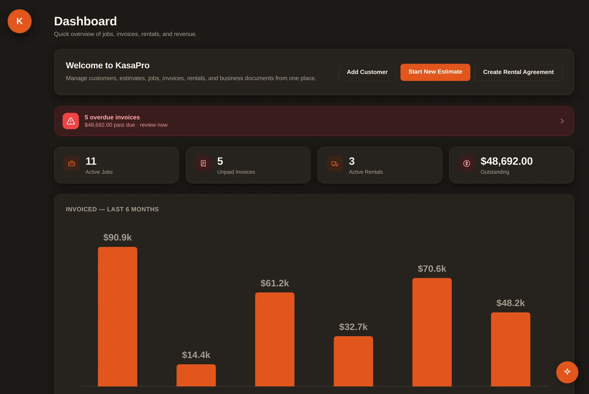
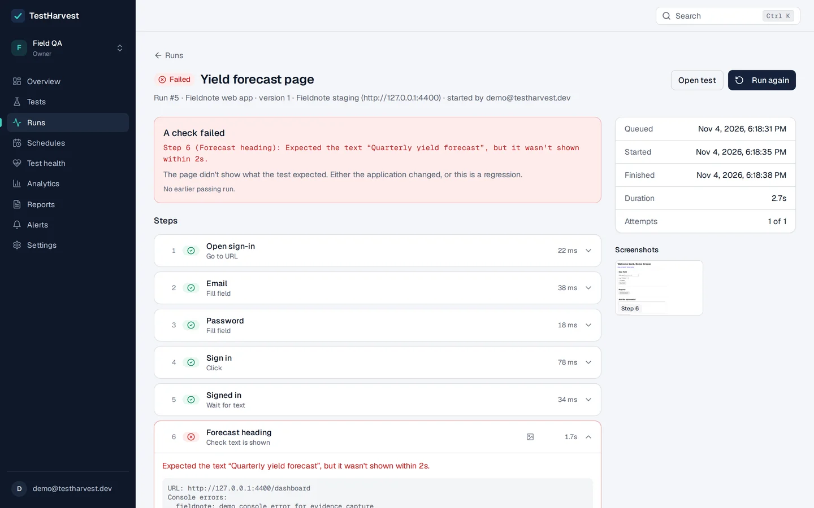
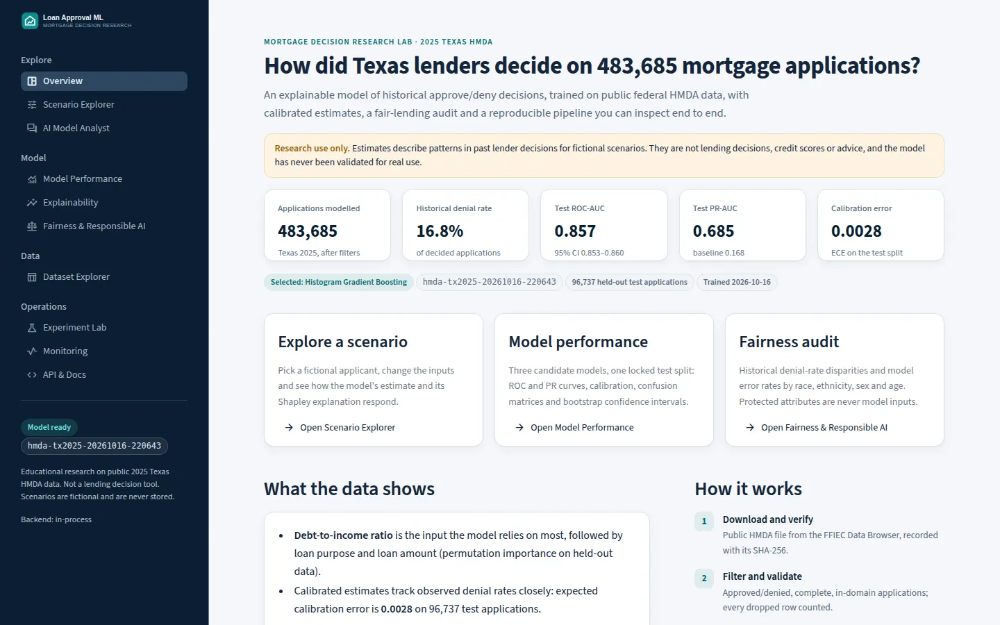
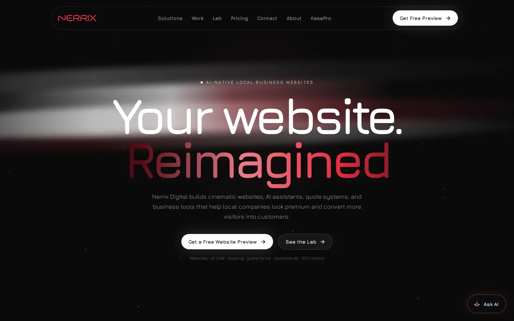
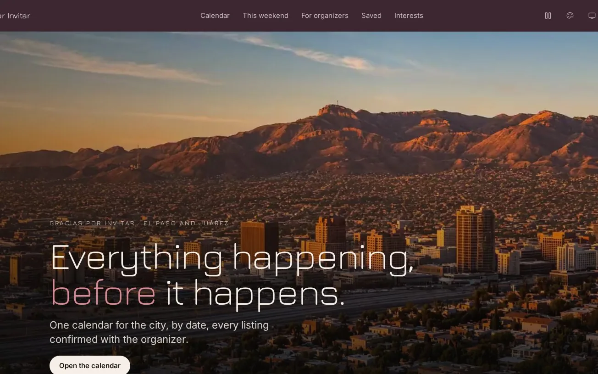
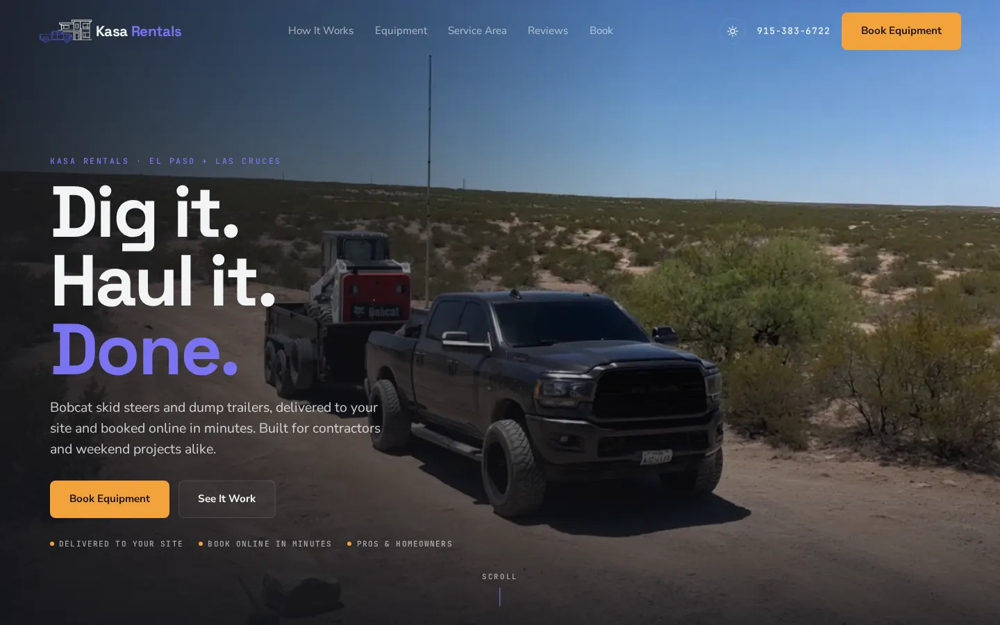

AboutSobre mí
I've run a construction crew in El Paso since 2023, and I write the software that crew and businesses like it run on.
My main project is KasaPro, a multi-tenant back office for contractors and equipment-rental businesses: estimates, jobs, invoices, rentals, e-signatures and card payments. Three businesses use it in production. In summer 2025 I interned at BW Fusion, where I built the end-to-end testing platform that replaced their paid testing subscription, and I run Nerrix Digital, a small studio building websites for local businesses.
I like the parts of software where a mistake costs someone money: keeping one customer's data away from another's, payments, retries, and tests that stop the next change from breaking the last one. I use AI tools every day as part of how I build, and I can walk you through every line of what's here.
- 3
businesses running on KasaPro
- ~$100K
invoiced and rented through it
- 940
automated tests on KasaPro
- 100+
invoices a day read by the system I built at BW Fusion
ExperienceExperiencia
ProjectsProyectos
-

KasaPro · in production
A back office for contractors and rental businesses. Every table is fenced by business, and a test reads every SQL query in the codebase and fails the build if one forgets the fence.
- Users
- 3 businesses
- Through it
- ~$100,000 invoiced and rented
- Tests
- 940
- Stack
- Node.js, Express 5, MySQL 8, EJS, Stripe Connect, Square, Render
Private repo · code walkthrough on request · screenshot uses demo data
-

TestHarvest
Self-hosted browser testing and monitoring: no-code tests, scheduled runs in real Chromium, one alert when something breaks and one when it recovers.
- Queue
- Postgres with worker leases and crash recovery, no Redis
- Schedules
- Fire once per due time across any number of workers
- Security
- Five roles, AES-256-GCM secrets, host allowlists
- Stack
- TypeScript, React, Express, PostgreSQL, Playwright, Docker
-

Loan Approval ML
A calibrated, explainable model of how lenders decided real Texas mortgage applications, with a fair-lending audit that keeps protected attributes out of training.
- Data
- 483,685 HMDA applications (2025, Texas)
- Result
- ROC-AUC 0.857 · PR-AUC 0.685 on 96,737 held out
- Tests
- 95
- Stack
- Python, scikit-learn, FastAPI, Streamlit, Docker, GitHub Actions
-

Nerrix Digital · my studio's site
The site for my web studio, which sells ads, custom landing pages and KasaPro to local service businesses. Behind the pages that sell, it runs an AI chat that knows every price and term, a booking calendar, a plan builder, live template demos and the studio's lab builds.
- Chat
- OpenAI on the studio's own server: one conversation across pages, capped replies, 8 messages a minute per visitor
- Booking
- A day you scrub across an El Paso time-lapse; no double booking, calendar invites, cancel links, an admin page
- Pages
- Pricing with a plan builder, the KasaPro product page, client work, template demos, lab builds
- Stack
- React 19, Vite, Tailwind, Framer Motion, GSAP, Express, Turso, Render
Private repo · code walkthrough on request
-

Gracias Por Invitar · team project
One calendar for everything happening in El Paso and Juárez, by date, with who each event is for and what it costs. It's the product my software project management team at UTEP is planning, and I built it as a working mock from our field study.
- Pages
- Calendar by day and category, event pages, a saved plan, an organizer form
- Motion
- A dusk time-lapse of the city played by the scroll, scrubbed to the minute on day pages
- Course
- CS 4390/5388 Software Project Management, Fall 2026
- Stack
- Vite, React 19, Tailwind 4, Motion, React Router
A working mock with sample events · the team's project portal is on the shelf below
-

KasaRentals
Online booking for skid steers and dump trailers. The calendar asks KasaPro which dates are free, the form books into it, and the owner approves from email.
- Booking
- Live availability, haul-away quotes, idempotent bookings
- Stack
- HTML, CSS, JavaScript, KasaPro public API
Also on the shelf
- Gracias Por Invitar project portalTeam · UTEPNext.js site where each document is one MDX source, rendered as a page and printed to PDF in CI
- tv-homeKotlinA replacement Android TV home screen in Jetpack Compose, with screenshot tests and reversible adb scripts
- LuvIn progressA Mac menu-bar voice assistant in Swift: hold a key, talk, and the answer streams and speaks sentence by sentence
WritingNotas
-
Nov 2026 · 6 min
A test that reads every SQL query
How KasaPro keeps one contractor from ever seeing another's customers, and why I stopped trusting myself to remember.
-
Nov 2026 · 7 min
A job queue on Postgres, no Redis
Leases, heartbeats and one compare-and-set that make TestHarvest's runs survive a crashed worker and never fire twice.
-
Nov 2026 · 6 min
What 483,685 Texas mortgage applications say
Choosing a model before looking at the test set, calibrating it, and the 3.9-point gap the financial inputs don't explain.
ContactContacto
I graduate in December 2026 and I'm looking for a full-time software engineering role: backend, full-stack, mobile or ML.
Email is the fastest way to reach me. I'm happy to walk through any of these code bases live, the private ones included.